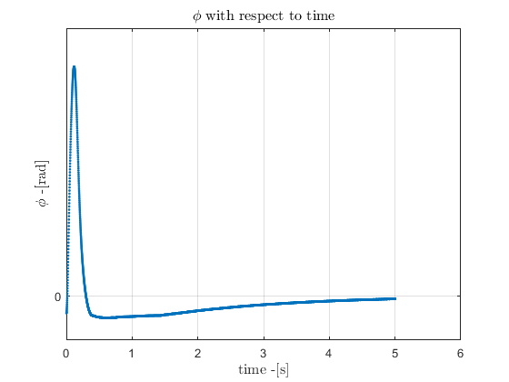
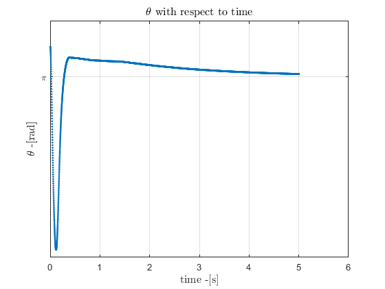
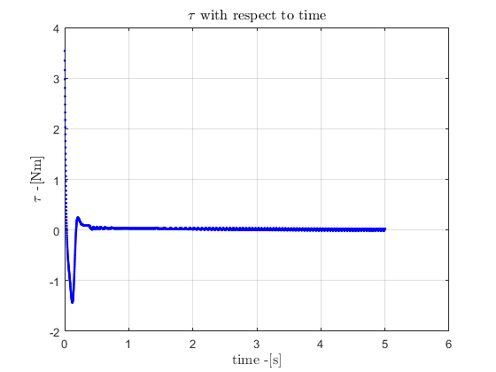

Visualising the Non-linear Model with Linear Controller
Contents
fetch variables and K matrix
run('FeedbackGain');
Ia
0.0022
Ib
0.0036
L1
0.2350
L2
0.3100
l1
0.2056
l2
0.2115
m1
0.5763
m2
0.4928
f1
0.0071
f2
0.0075
Eigenvalues from Quadratic Eigenvalue problem:
-11.1770
-4.9566
10.8690
5.0153
A =
0 0 1.0000 0
0 0 0 1.0000
43.5699 -32.1894 0.7174 0
-45.3129 102.7904 -1.6947 0
B =
0
0
-64.4418
164.9600
K Matrix:
-201.1805 -70.8450 -31.8285 -12.0610
Eigenvalues from ordinary eigenvalue problem:
11.3808
4.9922
-10.6775
-4.9782
Run simulation, and draw Graphs
time =5; theta_start = pi+pi/100; % [rad] phi_start = -pi/80; % [rad] theta_dot_start = 0; % [rad/s] phi_dot_start = 0; % [rad/s] step_size = 0.001 motor_stall_torque = 6; sim('NonlinearModel_LinearController'); q1_angle = get(q1_angle,'Data'); q2_angle = get(q2_angle,'Data'); tau = get(tau,'Data'); pointB = [L1*sin(q1_angle), -L1*cos(q1_angle)]; pointC = [L1*sin(q1_angle)+L2*sin(q2_angle+q1_angle), -L1*cos(q1_angle)-L2*cos(q2_angle+q1_angle)]; x_points = [zeros(size(pointB(1:end,1),1),1), pointB(1:end,1), pointC(1:end,1)]; y_points = [zeros(size(pointB(1:end,2),1),1), pointB(1:end,2), pointC(1:end,2)]; timestep = 1:1:size(pointB(1:end,1)); % \phi angle figure(1) plot(timestep.*step_size,q2_angle, '.', 'LineWidth',1); title('$\phi$ with respect to time','Interpreter','latex','FontSize',12) ylabel('$\phi$ -[rad]','Interpreter','latex','FontSize',12); xlabel('time -[s]','Interpreter','latex','FontSize',12); yticks([-1.5*pi -pi -0.5*pi 0 0.5*pi pi 1.5*pi]); yticklabels({'-1.5\pi', '-\pi','-0.5\pi','0','0.5\pi','\pi','1.5\pi'}) grid on % \theta angle figure(2) plot(timestep.*step_size,q1_angle, '.', 'LineWidth',1) title('$\theta$ with respect to time','Interpreter','latex','FontSize',12) yticks([-2*pi -pi 0 pi 2*pi]); ylabel('$\theta$ -[rad]','Interpreter','latex','FontSize',12); xlabel('time -[s]','Interpreter','latex','FontSize',12); yticklabels({'-1.5\pi','-\pi','-0.5\pi','0','0.5\pi','\pi','1.5\pi'}) yticks([-1.5*pi -1*pi -0.5*pi 0 0.5*pi 1*pi 1.5*pi]); grid on % \tau figure(4) plot(timestep.*step_size,tau, 'b.', 'LineWidth',1); title('$\tau$ with respect to time','Interpreter','latex','FontSize',12) xlabel('time -[s]','Interpreter','latex','FontSize',12); ylabel('$\tau$ -[Nm]','Interpreter','latex','FontSize',12); grid on % axis normal
step_size = 1.0000e-03  
Run Animation
prompt = 'Play Simulation: [yes == 1 / no == 0]?:' reply = input(prompt); if reply == 1 P0 = [0 0]; % axis(goa,'equal'); figure(10) ax = gca; ax.GridAlpha = 1; text(L1,L1,'Non-Actuated Pendulum','Color','Red','FontSize',12); text(L1,L1/2,'Actuated Pendulum','Color','Black','FontSize',12); axis([-L1-L2, L1+L2, -L1-L2, L1+L2]); grid on L1_dx = L1; L2_dx = L2; time_steps = 1:length(tout); % pause(); % v = VideoWriter('Balancing.mp4'); % v.Quality = 100; % v.FrameRate = 30; % open(v) for step = 1:10:length(tout) P1 = [L1_dx.*sin(q1_angle(step)) -L1_dx*cos(q1_angle(step))]; P2 = [L1_dx.*sin(q1_angle(step))+L2_dx.*sin(q1_angle(step)+q2_angle(step)), -L1_dx.*cos(q1_angle(step))-L2_dx.*cos(q1_angle(step)+q2_angle(step)) ]; %addpoints(pendulum, [P1(1),P2(2)], [P1(2),P2(2)] ); upper_pendulum = line( [P0(1) P1(1)], [ P0(2), P1(2) ],'Color','r','LineWidth',2); lower_pendulum = line( [P1(1) P2(1)], [ P1(2), P2(2) ],'Color','k','LineWidth',2); pause(0); frame = getframe; % writeVideo(v,frame); delete(upper_pendulum); delete(lower_pendulum); end end
prompt =
'Play Simulation: [yes == 1 / no == 0]?:'
Error using input Cannot call INPUT from EVALC. Error in LinearAnimations (line 69) reply = input(prompt);
close(v);
disp('Simulation Finished'); close all;